GPXSee Online Maps
GPXSee online map definition files ready to use. Simply download the XML file and open it in GPXSee as a map file. To use the map permanently, copy the file to the "maps" directory as found under Help->Paths.
Some maps require API keys or user credentials. Such map definition files have a ".tpl" extension instead of the usual ".xml" extension. You must fill in the required info and rename the file before you can use it in GPXSee.
Worldwide
| 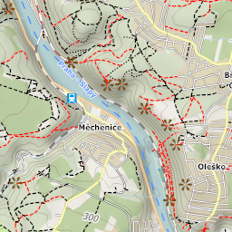 4UMaps |
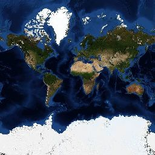 BlueMarble |
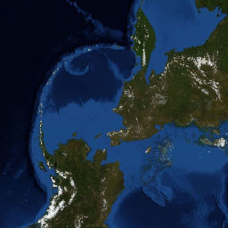 BlueMarble - Arctica |
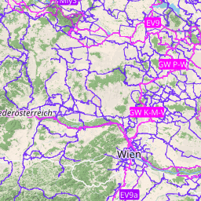 CyclOSM |
| 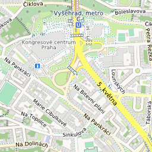 GIScience Heidelberg [TPL] |
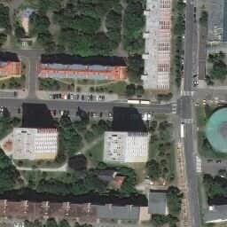 HERE Aerial Map [TPL] |
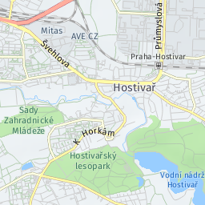 HERE Base Map [TPL] |
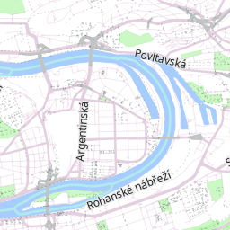 HERE Vector Tiles [TPL] |
| 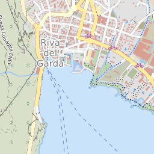 HikeBikeMap |
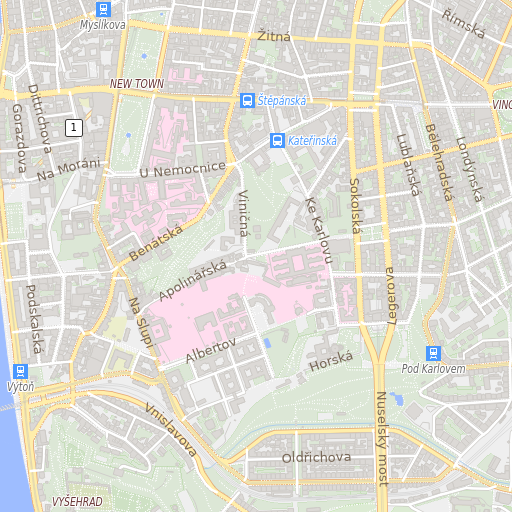 MapTiler [TPL] |
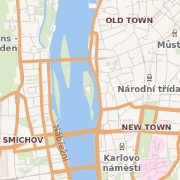 Mapbox Vector Tiles [TPL] |
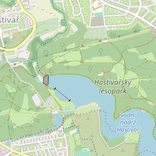 Open Street Map |
| 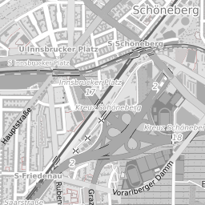 Open Street Map - Black and White |
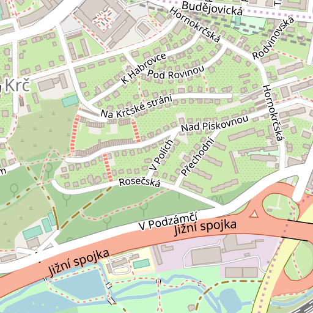 Open Street Map - HiDPI |
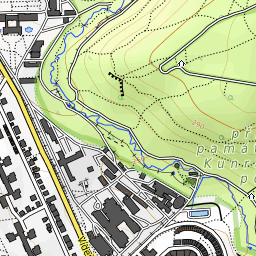 Open Topo Map |
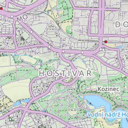 Thunderforest - Landscape [TPL] |
| 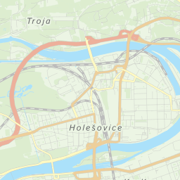 Thunderforest - Neighbourhood [TPL] |
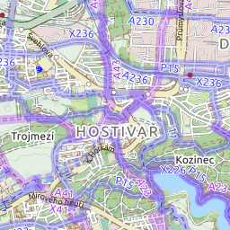 Thunderforest - OpenCycleMap [TPL] |
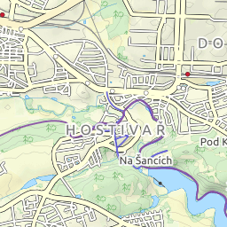 Thunderforest - Outdoors [TPL] |
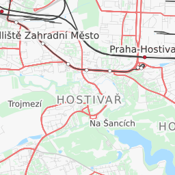 Thunderforest - Transport [TPL] |
| 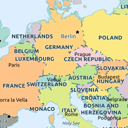 UNESCO |
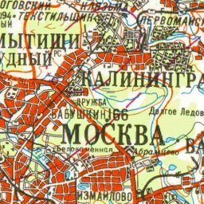 marshruty.ru |
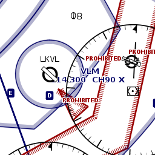 openAIP |
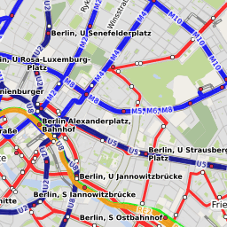 ÖPNVKarte |
Antarctica
| 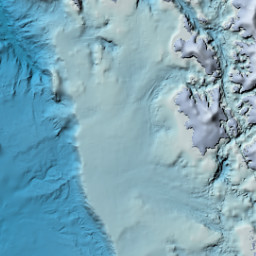 Antarctica |
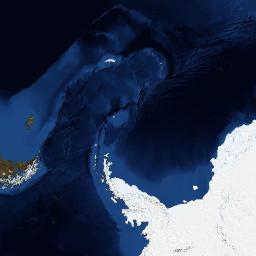 BlueMarble - Antarctica |
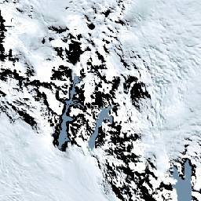 Landsat Image Mosaic of Antarctica |
Asia
| 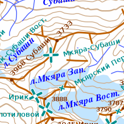 Slazav mountains |
Japan
| 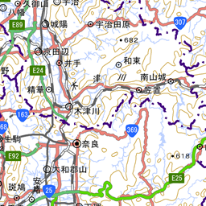 Geographical Institute Tile (標準地図) |
Taiwan (Republic of China)
| 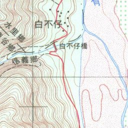 TWTOPO-happyman |
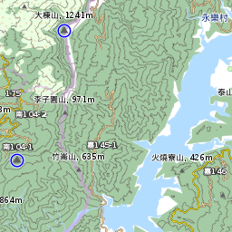 TWTOPO-rudy |
Europe
| 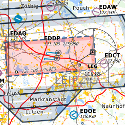 Open Flighmaps |
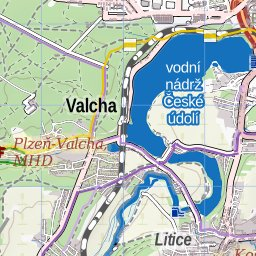 map1.eu |
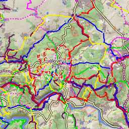 mtbmap.cz |
Austria
| 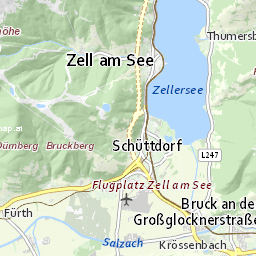 Basemap AT Farbe |
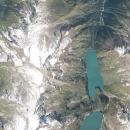 Basemap AT Orthofoto |
Belgium
| 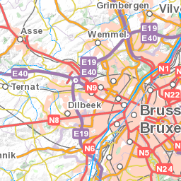 NGI |
Bulgaria
| 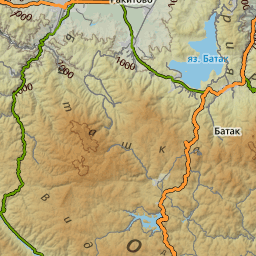 BGMountains |
Croatia
| 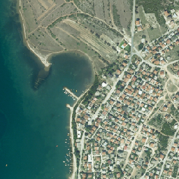 Digitalni ortofoto |
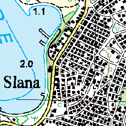 Topografska karta 25k |
Czech Republic
| 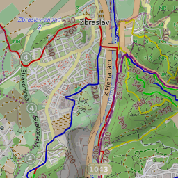 Poloha.Net |
 Prahou na kole |
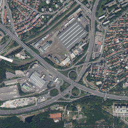 ČÚZK - Ortofoto |
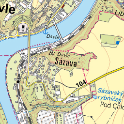 ČÚZK - Základní mapy |
Denmark
| 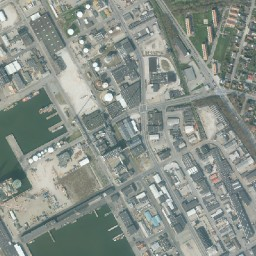 SDFE - Ortofoto forår [TPL] |
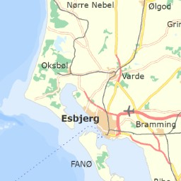 SDFE - Skærmkort [TPL] |
Estonia
| 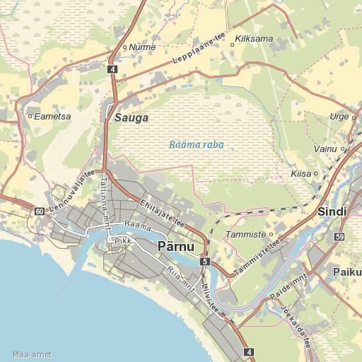 Maa-amet Topo |
Finland
| 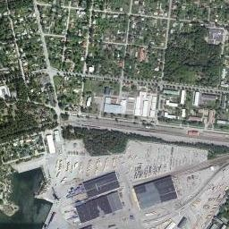 Ilmakuva (Aerial image) [TPL] |
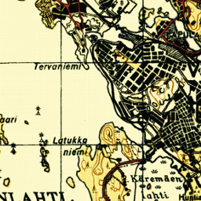 Karjalankartta (Maps of Karelia) 100k |
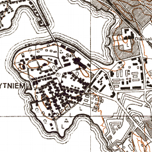 Karjalankartta (Maps of Karelia) 20k |
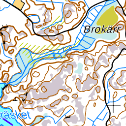 Maastokartta (Topographic map) [TPL] |
MapAnt |
Selkokartta (Plain map) [TPL] |
Taustakartta (Background map) [TPL] |
France
Cartes IGN |
Photographies aériennes |
Germany
Hungary
Turistautak |
Iceland
Iceland Atlas |
Iceland Landscape |
Iceland Map |
Latvia
LGIA - topo |
Netherlands
PDOK OpenTopo |
PDOK Ortho25 2017 |
Norway
Jan Mayen Topography |
Svalbard Orthophoto |
Svalbard Satellite Imagery |
Svalbard Topography |
Topografisk Norgeskart |
Poland
GUGIK Mapa Topograficzna |
GUGIK Ortofotomapa |
UMP-pcPL |
Russian Federation
GGC 1km |
GGC 250m |
GGC 2km |
GGC 500m |
O-sport |
OpenTopoMap.ru |
Races |
Slazav map |
Topo 1km |
Topo 250m |
Topo 500m |
Slovakia
Freemap Slovakia |
GKÚ - Ortofotomozaika |
GKÚ - ZBGIS |
Slovenia
Slovenia - DPK750 |
Slovenia - DTK50 |
Slovenia - ortofoto |
Spain
Cartografía raster del IGN |
ICV - Mapa topográfico |
IDECanarias Mapa Topográfico |
IDECanarias Orto |
IDENA - Mapa base |
IDENA - Mapa topográfico |
IDENA - Ortofoto |
Ortoimágenes de España |
Sweden
Historiska ortofoton [TPL] |
Topografisk Webbkarta [TPL] |
Switzerland
 OSM Switzerland |
OSM Switzerland Swiss Style |
Swisstopo - 25k |
Swisstopo - Landeskarte |
Swisstopo - Swissimage |
United Kingdom (Great Britain)
OS Leisure [TPL] |
OS Outdoor [TPL] |
OS Road [TPL] |
North America
Canada
Canada - Toporama |
United States of America
ChartBundle.com - Sectional |
USGS Imagery |
USGS Topo |
Oceania
New Zealand
NZ Topo Map 250 |
NZ Topo Map 50 |